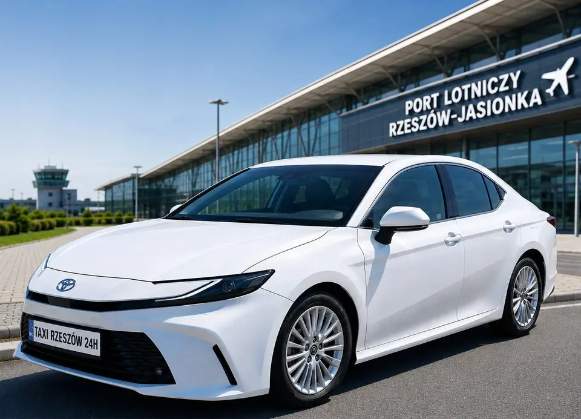

Rzeszów‑Jasionka Airport taxi 24/7
Transfers from anywhere in Rzeszów and the surrounding area to the airport and pick-ups from your flight, at night and when your plane is late too. Book in a minute, we confirm by SMS or phone.
Day and night, holidays included. Card, cash or BLIK.
Airport transfers between Rzeszów and Jasionka
We drive to Rzeszów-Jasionka Airport (RZE) from every part of Rzeszów, including the city centre, Nowe Miasto, Baranówka, Drabinianka, Pobitno, Zalesie, Biała, Budziwój, Staromieście and Krakowska Południe, as well as from the towns around the city. We work around the clock, so a night or early-morning flight is no problem.
We serve both private and business clients. We always monitor your flight for delays, so you are picked up at the right time even if your flight is late, and waiting time is free of charge. The car is always parked right opposite the terminal exit. Our cars are regularly serviced and ready for a comfortable ride with luggage.
To the airport (departure)
- Give us the pick-up address and time, we sort out the rest when we confirm.
- Advance booking, also for night and early-morning flights.
- Help with luggage.
From the airport (arrival)
- Add your flight number to the booking and we monitor it for delays.
- Waiting time is free of charge.
- The car is parked right opposite the terminal exit.
- On request your driver waits in the terminal with a name sign.
- We take you to any address in Rzeszów, the area or further.
Other airports: Kraków, Katowice, Lublin, Warsaw
Besides Jasionka we drive to Kraków-Balice (KRK), Katowice-Pyrzowice (KTW), Lublin (LUZ) and Warsaw (WAW) airports, door to door and without changes. Longer trips are best booked in advance.
Payment and invoices
You can pay by card, cash or BLIK. We issue VAT invoices for companies and work with hotels, driving their guests to the airport, the station and around town with invoicing to the hotel.
Questions about Jasionka Airport transfers
Do you drive to Jasionka Airport at night?
Yes, we run transfers to and from Rzeszów-Jasionka Airport 24 hours a day, including weekends and holidays.
What if my flight is delayed?
We always monitor your flight for delays, so the driver arrives at the right time. Waiting time is free of charge. Just add your flight number to the booking.
Where does the driver wait at Jasionka Airport?
The car is always parked right opposite the terminal exit. On request the driver waits for you in the terminal with a sign with your name - just add it to the notes in your booking.
How much is a taxi from Rzeszów to Jasionka Airport?
Airport transfers are priced individually. We give you the price when we confirm the booking, by SMS or phone. Per-km rates are listed in our price list.
How do I book an airport transfer?
Call +48 536 805 851, send a WhatsApp message or fill in the form on this page. We confirm the booking by SMS or phone.
Do you speak English?
Yes, we take bookings in Polish, English, German and Ukrainian. WhatsApp is the easiest way to write to us.